Studio / 01
Designed for life
beyond the photograph.
Galeković Design develops private, commercial and hospitality spaces. The studio's work draws on 17 years of experience, from the first floor plan to the final furniture detail.
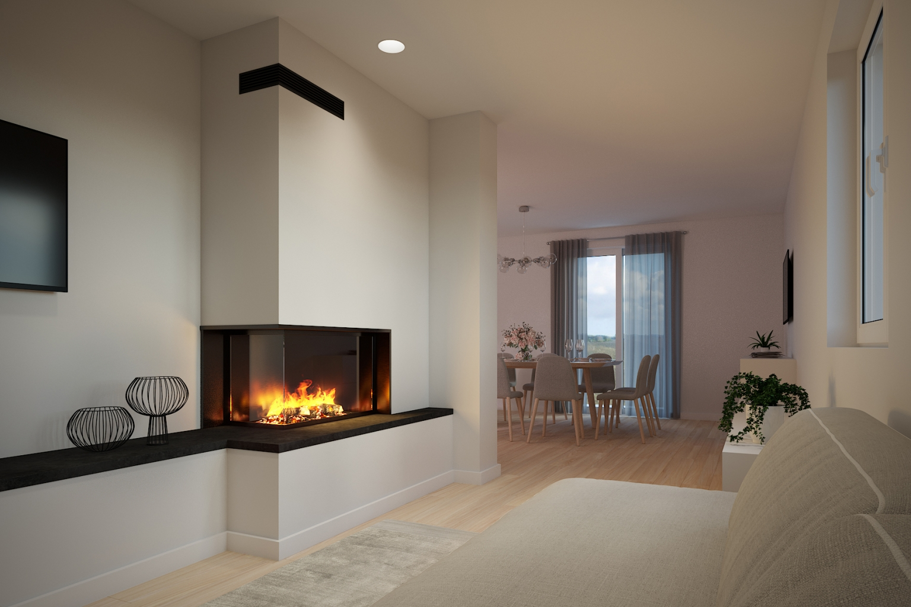
The connection with the Galeković family production company, Gala drvo, brings direct knowledge of materials, construction and installation. Details are resolved before they reach the workshop. Production and services.
Experience / 02
The work in numbers
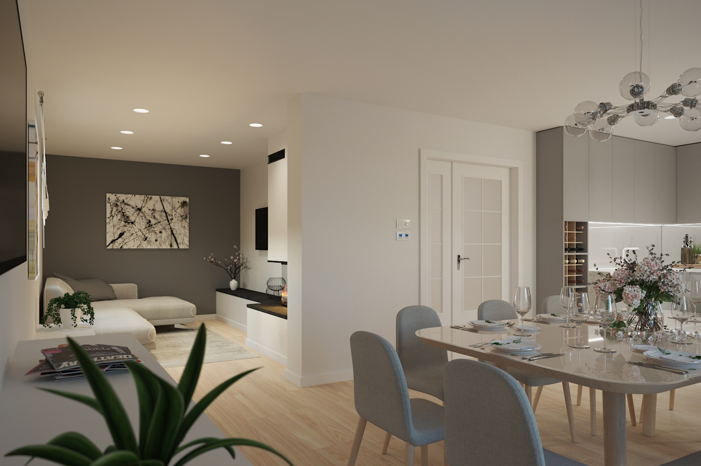
Services / 03
Three ways
to work together
The scope depends on whether the project needs a concept, detailed custom furniture design or full coordination through completion.
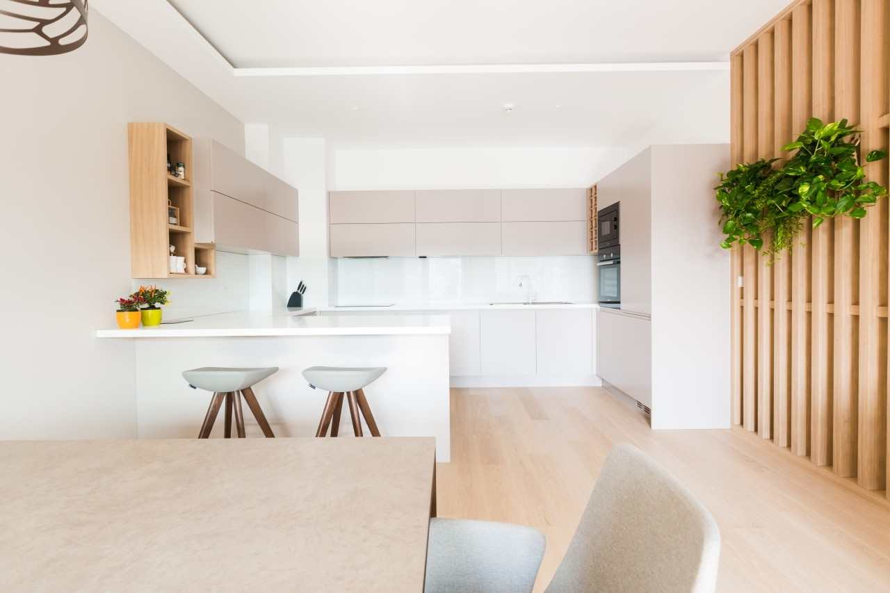
001Interior
Concept
Floor plan, design direction, material palette and key visualisations.
Does not include technical documentation, custom furniture or implementation coordination.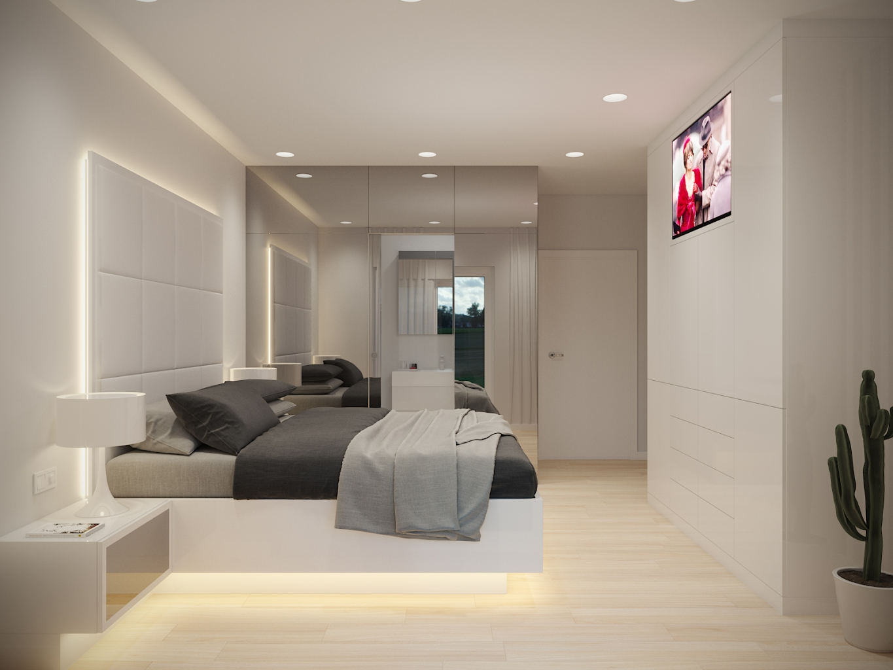
002Interior + Custom
Furniture
Interior concept, technical development and furniture designed for the specific space.
Does not include contractor coordination or final quality control unless agreed separately.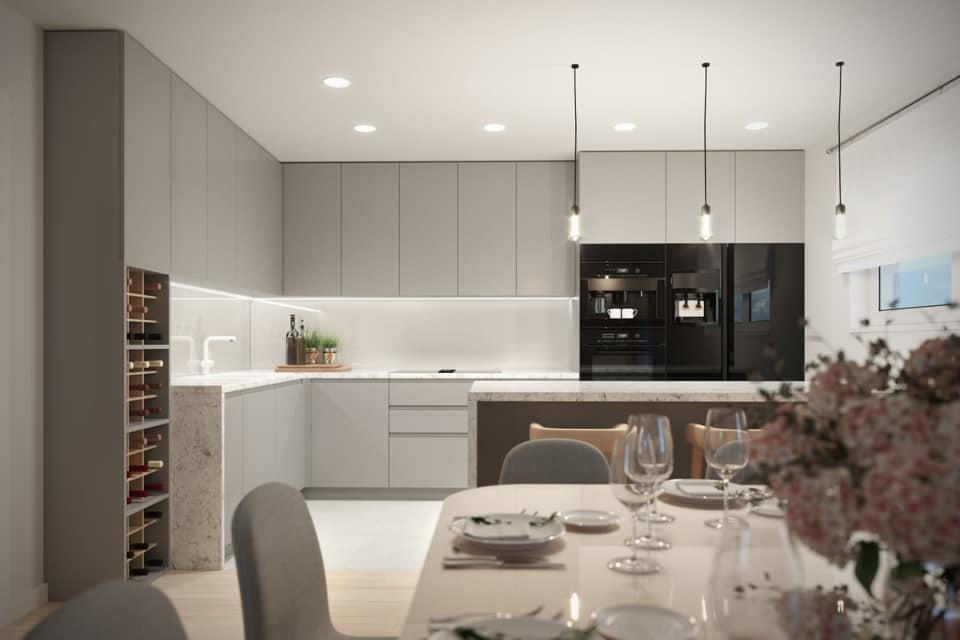
003Complete
Interior
Design, production, contractor coordination and final quality control.
Coordination is not statutory construction supervision. The exact implementation scope is defined in the proposal.Before the project / 01Everything is defined in the proposal
Scope, deliverables, revisions, meetings, site visits, timing and fees are agreed before the project begins.
Boundaries / 02Only agreed work is included
Production, purchasing, delivery, installation and coordination are included only when listed in the accepted proposal.
Changes / 03Approval closes each stage
Later changes may affect the fee and schedule. Their impact is confirmed before work continues.
Portfolio / 04
Selected
projects
Every photograph shows a completed space and details developed specifically for that project.
Samobor Apartment
/001/The layout and custom furniture were developed together. The kitchen, dining room and living area read as one calm whole.
Heritage Hotel Viganj
/002/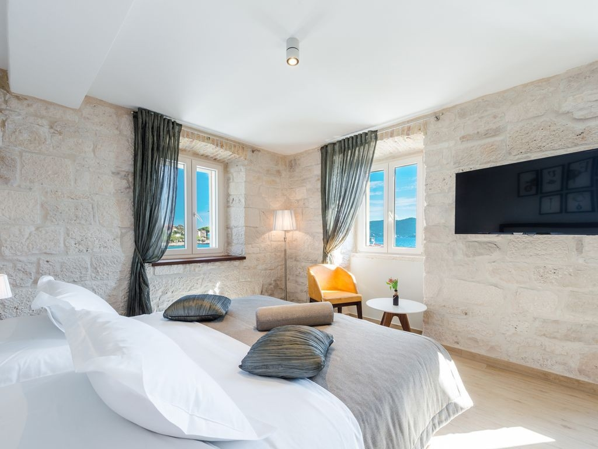
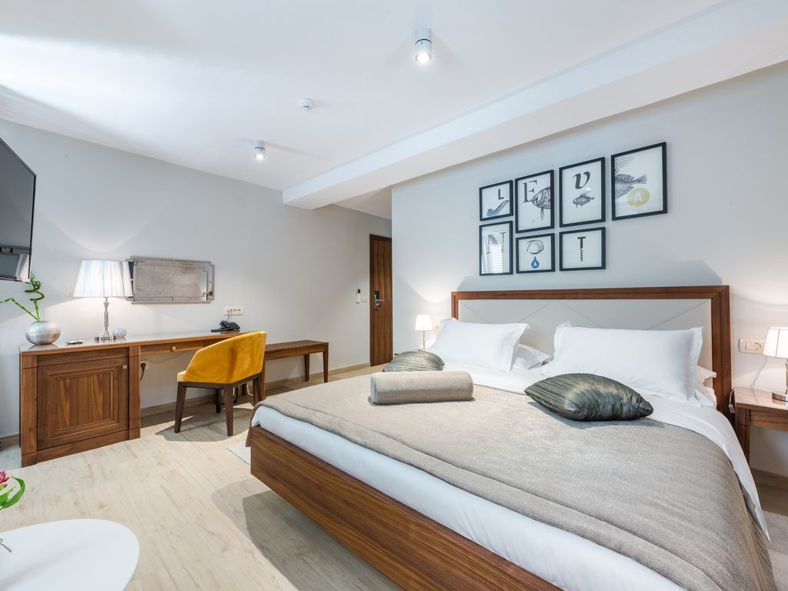
The local character of Viganj carries through the rooms, shared spaces and details built for the daily rhythm of a hotel.
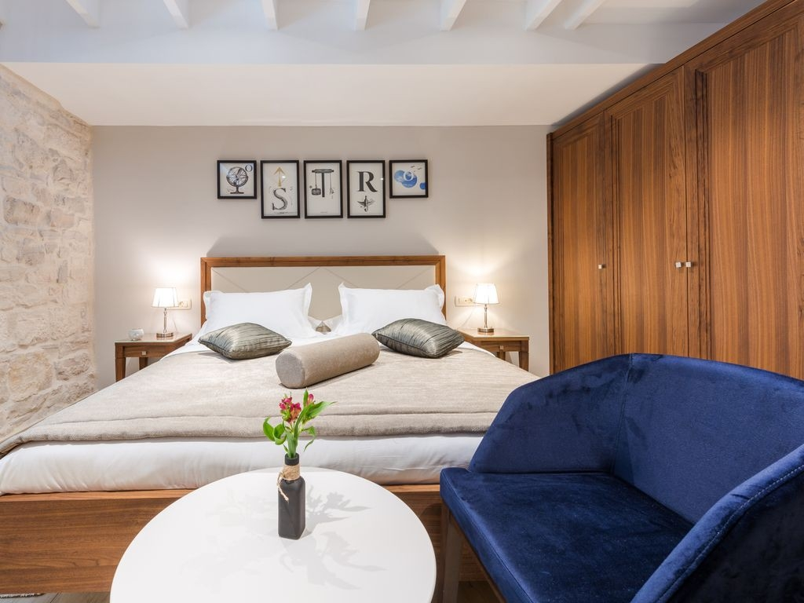
Products / 05
Designed by Galeković Design.
Made by Gala drvo.
Original pieces developed from the first sketch through production. Current availability, finish and price are confirmed before ordering.
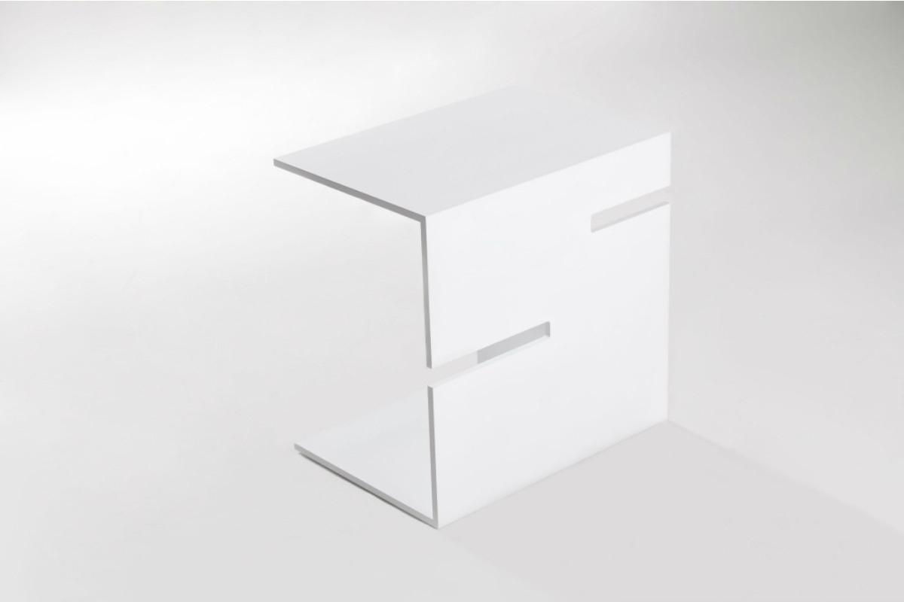
001Bookmark Table
Multifunctional side table
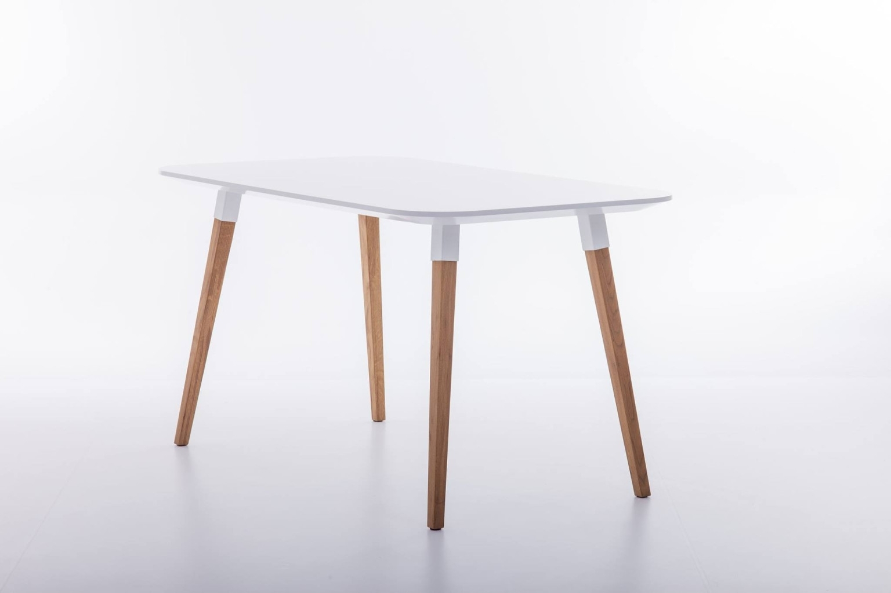
0024HR
Dining table in MDF and Croatian oak
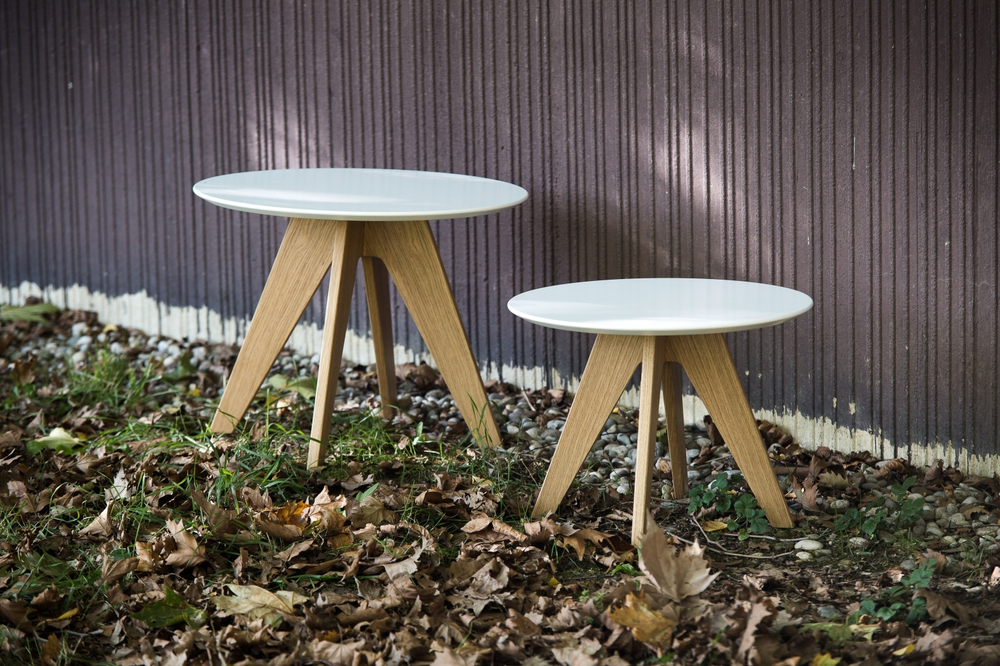
003Duo Table
Coffee table combining MDF and oak
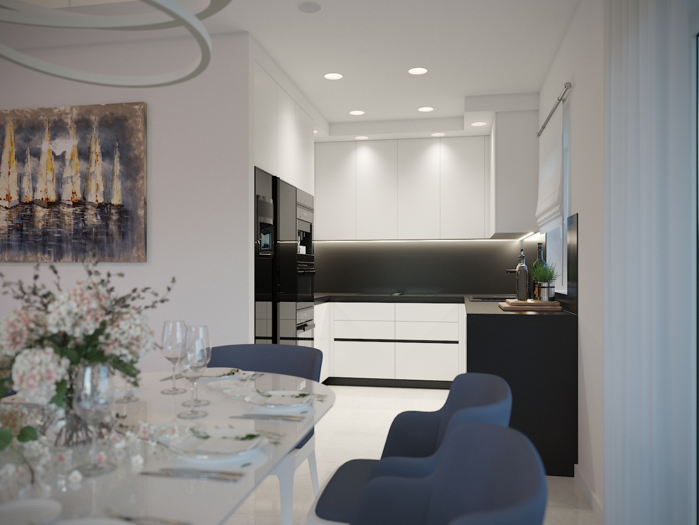
Process / 05
Four clear stages, from reviewing the floor plan to final checks on site.
From concept
to completion
- 01Understanding the space
Floor plan, needs, habits, schedule and budget.
- 02Concept development
Spatial organisation, atmosphere, materials and visual direction.
- 03Technical development
Drawings, details and custom furniture.
- 04Delivery
Production, coordination and final quality control.
B2B / 06
Space designed
around the business
Design and fit-out for boutique hotels, villas, restaurants, offices and developer projects. Spatial identity, custom furniture and delivery are planned as one whole.
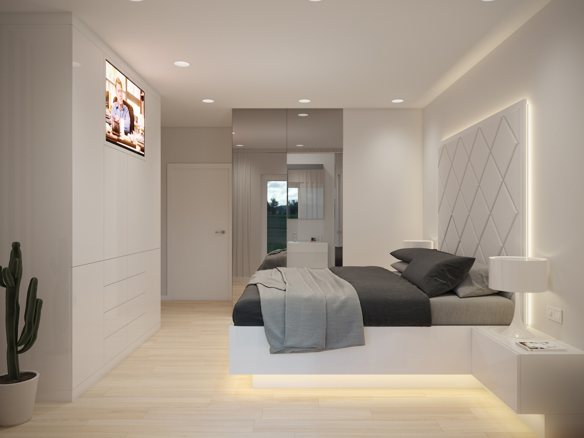
Journal / 07
Useful before
the project starts
Short, practical answers to questions that often come up before an interior project begins.
Budget · 2026
What determines the cost of an interior project?
The categories behind a realistic budget and why one price per square metre is not enough.
Read the guide ↗ Renovation · 2026What is the right sequence for an apartment renovation?
Design, installations, furniture and contractors in an order that reduces costly rework.
Read the guide ↗ Furniture · 2026Custom-made or ready-made furniture?
Where precision pays off and where a ready-made piece can be the better choice.
Read the guide ↗Tools / 08
Prepare the project
before getting in touch
An interactive planner helps you choose a service, prepare a brief, outline a budget and define custom furniture needs.
How much support do you need?
Choose what the project needs at this stage.
02First meeting checklist
Open +
- Floor plan or measured sketch
- Photos of the existing space
- Location and floor area
- Target schedule
- Budget range
- Main priorities
03Hospitality project brief
Open +
- Property type and category
- Guest profile
- Number of units or seats
- Operational requirements
- Maintenance standards
- Planned opening date
FAQ / 09
Before the first
conversation
When is the right time to involve a designer?
Before final decisions are made about installations, lighting, flooring and joinery. Starting early leaves more room for a well-resolved layout and reduces costly changes later.
How long does a project take?
Timing depends on the size and condition of the space, the scope of service and the amount of custom furniture. A realistic schedule is set after reviewing the floor plan and project brief.
How is the budget defined?
The estimate covers work, equipment, lighting, furniture, delivery, installation and contingency. A single price per square metre is not reliable because every space has a different scope.
Can I commission only part of the service?
Yes. The available options are Interior Concept, Interior + Custom Furniture, and Complete Interior with coordination and delivery.
What should I send before the first conversation?
A floor plan or measured sketch, photos of the space, location, approximate floor area, target schedule, a short description of needs and an initial budget range.
Is custom furniture included?
It depends on the selected service. It is not included in the standard Interior Concept scope. When listed in the proposal, materials, hardware, joints, lighting and installation are developed in detail.
What does contractor coordination mean?
Coordination connects project information, the decision schedule and communication with the contractors included in the proposal. It is not statutory construction supervision unless that service is agreed separately.
What happens if the project changes after approval?
Each stage is approved before work continues. A later change is assessed first because it may affect fees, documentation, production and timing.
Are projects outside Zagreb possible?
Yes. Site visits, measurements and coordination are planned according to location and project type.
Are hospitality and B2B projects available?
Yes. The service is available for boutique hotels, villas, restaurants, offices and developer projects.
Contact / 10
Have a space?
Send the floor plan.
For an initial assessment, send the location, approximate floor area, project stage, floor plan and a short description of what is needed.
info@galekovic-design.hr ↗ +385 91 939 5377 ↗